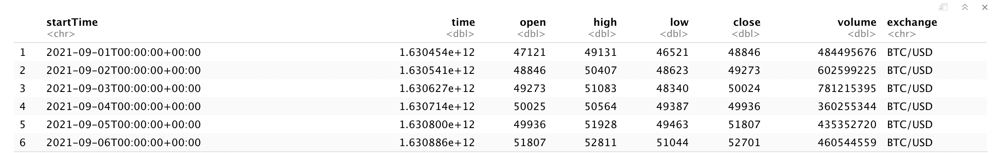
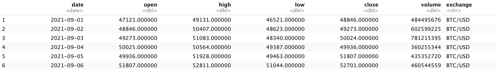
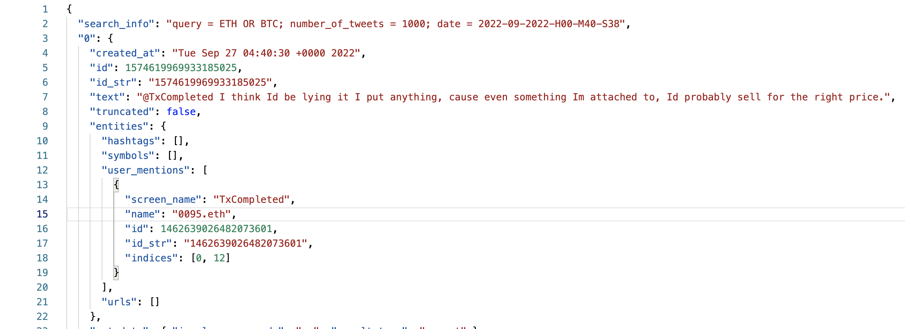

Code
import warnings
warnings.filterwarnings('ignore')
from PIL import Image
myImage = Image.open('../../501-project-website/images/data_cleaning/data_cleaning.png')
myImage
import warnings
warnings.filterwarnings('ignore')
from PIL import Image
myImage = Image.open('../../501-project-website/images/data_cleaning/data_cleaning.png')
myImage
Picture from Obviously.ai
Data cleansing is the process of correcting or removing, incorrect, or unnecessary data from a data set prior to data analysis. Data cleansing turns some messy, potentially problematic data into clean data. r is an excellent tool for working with data. Packages like tidyverse make complex data manipulation almost effortless. Also, since R is a common language for statistics, it is very easy to use R for further calculations on financial type data. Compared to R, Python is more convenient for working with NLP data. In this part, FTX dataset and the Twitter dataset are chosen and cleaned by using R and python respectively.
Before starting to clean up the data using R, the final perfect data should achieve no erroneous values; Eliminate Redundancy; Data should be reliable and valid; Time data, like date, remain coherent; Missing values are treated correctly; Data should remain complete after cleaning.
In this part, each of the steps in FTX dataset cleaning will be presented in order.
An important “pre-data cleaning” step is domain knowledge. One needs to know what each variable means, which variables are important, which values may need to be cleaned for later data analysis, and which new variables should be added by calculating among the original data variables.
Open R studio, import the FTX dataset, use head() to look at the first few rows of data, The initial data looks like the picture below：
from PIL import Image
myImage1 = Image.open('../../501-project-website/images/data_cleaning/initial _data.png')
myImage1
This dataset has irregularities, which include accuracy issues such as invalid values and outliers. For example, the time format of the StartTime column is yyyy-mm-ddThh:mm:ss+ms:µs. Such a timestamp format is not conducive to time analysis. Also, since the expectation for the StartTime column to be taken at 0:00 UTC each day when getting the data, this column only needs to take the date data, not the exact time data. All exact time data like hours, minutes need to be removed, and change the timestamp format to yyyy-mm-dd. Also, the StartTime and time columns belong to data duplication, and the time column uses the unit: millisecond to record time, which needs to be deleted from the time column.
In the original dataset, there are two columns that contain time information. Obviously, the second column about time is unnecessary, so this column is removed. Meanwhile, the first time column contains a lot of unnecessary information. I removed the extra information by splitting and deleting it. With these steps, I got the initial cleaned-up data. The data type of the column date was also modified from char to date.
After modifing these two colums, the initial data looks more clean and neat. See Figure-2 below:
from PIL import Image
myImage2 = Image.open('../../501-project-website/images/data_cleaning/initial _data_1st_clean.png')
myImage2
However, the analysis requires price stability over time, so a rolling average needs to be calculated to get the 20-day or 5-day closing prices for different types of cryptocurrencies. the 20-day average closing price is the variable M20 and the 5-day average closing price is the variable M5. these two variables can be used as important indicators to determine the stability of cryptocurrency prices. It is not recommended to directly delete or add new values to the NA values for each cryptocurrency as a result of calculating the M20 and M5 columns. Since M20 is the average of cryptocurrency closing prices over a 20-day period, the values from the first row to the 19th row are NA. Similarly, in M5, the values from the first row to the fifth row are NA. the analysis will require other variables for the calculation, and the missing values will be directly ignored and will not affect the subsequent analysis process. From the table-1 below, all the values required so far can be obtained.
import pandas as pd
pd.set_option('display.float_format',lambda x: '%.4f' % x)
ftx=pd.read_csv('../../data/01-modified-data/cleaned_currency.csv')
ftx.tail(5)| date | open | high | low | close | volume | exchange | M20 | M5 | |
|---|---|---|---|---|---|---|---|---|---|
| 3434 | 2022-08-27 | 6.5040 | 6.6105 | 6.4115 | 6.5300 | 2563168.6220 | LINK/USD | 7.8931 | 6.9035 |
| 3435 | 2022-08-28 | 6.5300 | 6.6305 | 6.2250 | 6.2525 | 2912844.5304 | LINK/USD | 7.7752 | 6.7061 |
| 3436 | 2022-08-29 | 6.2525 | 6.7295 | 6.1970 | 6.6985 | 4572188.1508 | LINK/USD | 7.6728 | 6.6221 |
| 3437 | 2022-08-30 | 6.6985 | 6.8210 | 6.3695 | 6.5585 | 4141158.0030 | LINK/USD | 7.5477 | 6.5088 |
| 3438 | 2022-08-31 | 6.5585 | 6.8955 | 6.5410 | 6.6285 | 4622365.3738 | LINK/USD | 7.4310 | 6.5336 |
To learn more about code, see R code for data cleaning
For the Twitter dataset, the cleaned text data should not include emojis or special symbols. Prepare for sentiment analysis by segmenting and filtering text data; analyze word frequencies for fast sentiment analysis using NLTK’s built-in classifier; define features for custom classification and analyze the relevance of high-frequency words.
Text cleaning is the process of rearranging human language into a format that machine models can understand. Text cleaning can be performed using simple Python code that eliminates stop words, removes single-code words, and simplifies complex words to their root form. The Twitter dataset is expected to use sentiment analysis, which is the practice of using algorithms to classify various relevant text samples into overall positive and negative categories. The NLTK package can efficiently process and analyze linguistic data. The dataset will be used NLTK to classify the data in a variety of ways, including sentiment analysis, through powerful built-in machine learning operations.
from sklearn.feature_extraction.text import CountVectorizer
import numpy as np
import json
import pandas as pd
import seaborn as sns
import matplotlib.pyplot as plt
from nltk.tokenize import TweetTokenizer
from nltk.corpus import stopwords#python -m nltk.downloader stopwords
import string
np.set_printoptions(threshold=np.inf)The initial data from twitter is a dataset in json format. The json file was later converted to a more readable Dataframe using the pandas package. By looking at it, we can see that this dataset does contain a lot of information, but some of it is not unwanted. Only text is the most important category. Therefore, all other information was removed except for the text.
from PIL import Image
myImage3 = Image.open('../../501-project-website/images/data_cleaning/raw_twitter_data.png')
myImage3
First, read the datasets, not all the data categories in the datasets are useful for sentiment analysis, only the text column needs to be focused on cleaning up, in this case, the categories the other columns are in are not important for analysis. Keeping these unneeded categories will take up unnecessary space and may also slow down the runtime. A Dataframe that retains only the text column is shown in table-2 below.
import pandas as pd
data=pd.read_csv('../../data/01-modified-data/twitter_text_data.csv')
data.head(5)| text | |
|---|---|
| 0 | @TxCompleted I think Id be lying it I put anyt... |
| 1 | RT @Nanda__OCE: 🎁@satoshinftclub WHITELIST &am... |
| 2 | wl Notice Minting @eleven_eth @cryptobrighton ... |
| 3 | RT @MatCote3: @MoonlitMonkey69 @THORmaximalist... |
| 4 | RT @BlockBet_: Did you know: On average, 900 $... |
After removing the irrelevant columns and splitting each tweet into individual words. Then removing capitalization that would confuse a computer model, change all uppercase letters of the text to lowercase. The data below shows the first 30 characters, and by looking at them we can see that there is still a fair amount of noise - because NLP converts @, URLs, punctuation, and emojis to Unicode, making them unhelpful for analysis, we further standardize by eliminating Unicode characters.
tknzr = TweetTokenizer()
def tokenizer_tweets(df):
text = ''
for t in df['text']:
text += t
tokens = [i.lower() for i in tknzr.tokenize(text)]
return tokens
tokens = tokenizer_tweets(data)
tokens_sub=tokens[1:30]
print(tokens_sub)['i', 'think', 'id', 'be', 'lying', 'it', 'i', 'put', 'anything', ',', 'cause', 'even', 'something', 'im', 'attached', 'to', ',', 'id', 'probably', 'sell', 'for', 'the', 'right', 'price.rt', '@nanda__oce', ':', '🎁', '@satoshinftclub', 'whitelist']In all words, some words and punctuation are redundant, so I removed punctuation and words with less than three letters by import stopwords. In this way, a previously complex, multi-element text is transformed into a series of keywords prepared for text analysis.
import random
punctiuation = list(string.punctuation)
stop = stopwords.words('english') + punctiuation
def clear_tokens(tokens):
tokens_cl = [t for t in tokens if (len(t) >= 3)
and (not t.startswith(('#', '@')))
and (not t.startswith('http'))
and (t not in stop)
and (t[0].isalpha())]
return tokens_cl
tokens_cl = clear_tokens(tokens)
tokens_cl_sub=tokens_cl[1:10]
print(tokens_cl_sub)['lying', 'put', 'anything', 'cause', 'even', 'something', 'attached', 'probably', 'sell']The most basic form of analysis of textual data is to take out the word frequency. A single tweet is too small of an entity to find out the distribution of words, hence, the analysis of the frequency of words would be done on all tweets. The number of occurrences of different keywords is shown in tablt-3 below.
word_occ = pd.value_counts(np.array(tokens_cl))
word_occ = pd.DataFrame(word_occ)
word_occ=word_occ.reset_index()
word_occ.columns=['key_words', 'number']
word_occ.head()| key_words | number | |
|---|---|---|
| 0 | eth | 299 |
| 1 | follow | 151 |
| 2 | enter | 96 |
| 3 | get | 89 |
| 4 | giveaway | 88 |
Because of the large number of words, I randomly selected 20 words for the CountVectorizer step. By using CountVectorizer, I derived ONE_HOT_ENCODED matrix.
vectorizer=CountVectorizer()
tokens_cl_sub = random.sample(tokens_cl, 20)
Xs = vectorizer.fit_transform(tokens_cl_sub)
col_names =vectorizer.get_feature_names()
X=np.array(Xs.todense())
maxs=np.max(X,axis=0)
ONE_HOT_ENCODED=np.ceil(X/maxs)
ONE_HOT_ENCODED[:5]array([[0., 0., 0., 0., 0., 0., 0., 0., 0., 1., 0., 0., 0., 0., 0., 0.,
0., 0., 0., 0.],
[0., 0., 0., 1., 0., 0., 0., 0., 0., 0., 0., 0., 0., 0., 0., 0.,
0., 0., 0., 0.],
[0., 0., 0., 0., 0., 0., 0., 0., 0., 0., 0., 0., 1., 0., 0., 0.,
0., 0., 0., 0.],
[0., 0., 0., 0., 0., 0., 0., 0., 0., 0., 0., 0., 0., 0., 0., 0.,
0., 0., 1., 0.],
[0., 1., 0., 0., 0., 0., 0., 0., 1., 0., 0., 0., 0., 0., 0., 0.,
0., 0., 0., 0.]])The final correlation table looks like this.
noise=np.random.uniform(0,0.00001,X.shape)
df1=pd.DataFrame(noise+X, columns=col_names)
corr=df1.corr()
corr.head()| airdrop | away | btc | bullish | city | computer | decent | get | giving | incentives | moon | opensea | price | propose | really | something | spot | thank | wedge | wins | |
|---|---|---|---|---|---|---|---|---|---|---|---|---|---|---|---|---|---|---|---|---|
| airdrop | 1.0000 | -0.0526 | -0.0765 | -0.0526 | -0.0526 | -0.0526 | -0.0526 | -0.0526 | -0.0526 | -0.0526 | -0.0526 | -0.0526 | -0.0765 | -0.0526 | -0.0526 | -0.0526 | -0.0526 | -0.0526 | -0.0526 | -0.0526 |
| away | -0.0526 | 1.0000 | -0.0765 | -0.0526 | -0.0526 | -0.0526 | -0.0526 | -0.0526 | 1.0000 | -0.0526 | -0.0526 | -0.0526 | -0.0765 | -0.0526 | -0.0526 | -0.0526 | -0.0526 | -0.0526 | -0.0526 | -0.0526 |
| btc | -0.0765 | -0.0765 | 1.0000 | -0.0765 | -0.0765 | -0.0765 | -0.0765 | -0.0765 | -0.0765 | -0.0765 | -0.0765 | -0.0765 | -0.1111 | -0.0765 | -0.0765 | 0.6882 | -0.0765 | -0.0765 | -0.0765 | -0.0765 |
| bullish | -0.0526 | -0.0526 | -0.0765 | 1.0000 | -0.0526 | -0.0526 | -0.0526 | -0.0526 | -0.0526 | -0.0526 | -0.0526 | -0.0526 | -0.0765 | -0.0526 | -0.0526 | -0.0526 | -0.0526 | -0.0526 | -0.0526 | -0.0526 |
| city | -0.0526 | -0.0526 | -0.0765 | -0.0526 | 1.0000 | -0.0526 | -0.0526 | -0.0526 | -0.0526 | -0.0526 | -0.0526 | -0.0526 | -0.0765 | -0.0526 | -0.0526 | -0.0526 | -0.0526 | -0.0526 | -0.0526 | -0.0526 |
To learn more about code, see R code for data cleaning